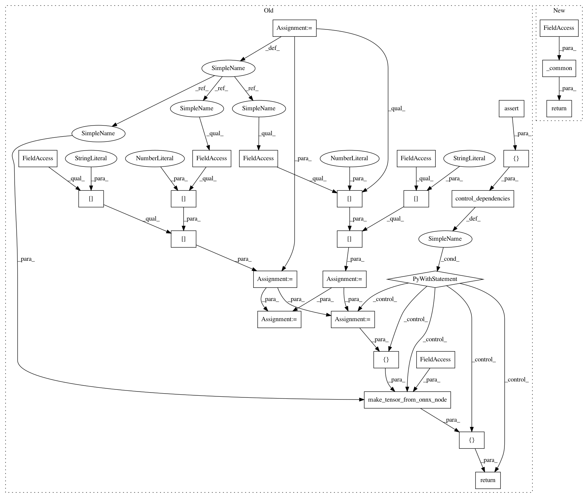

14cce3ea876750c29e375997896d9990e10ef6e2,onnx_tf/handlers/backend/gather_nd.py,GatherND,version_11,#Any#Any#,14
Before Change
@classmethod
def version_11(cls, node, **kwargs):
data = kwargs["tensor_dict"][node.inputs[0]]
indices = kwargs["tensor_dict"][node.inputs[1]]
result = cls.chk_idx_out_of_bounds(data, indices)
msg = "GatherND indices are out of bounds, please double check the indices and retry."
with tf.control_dependencies(
[tf.compat.v1.assert_equal(result, True, message=msg)]):
indices = cls.process_neg_idx(data, indices)
return [
cls.make_tensor_from_onnx_node(node, inputs=[data, indices], **kwargs)
]
After Change
@classmethod
def version_11(cls, node, **kwargs):
return cls._common(node, **kwargs)
@classmethod
def version_12(cls, node, **kwargs):
return cls._common(node, **kwargs)
In pattern: SUPERPATTERN
Frequency: 3
Non-data size: 27
Instances
Project Name: onnx/onnx-tensorflow
Commit Name: 14cce3ea876750c29e375997896d9990e10ef6e2
Time: 2020-09-28
Author: wtsang@us.ibm.com
File Name: onnx_tf/handlers/backend/gather_nd.py
Class Name: GatherND
Method Name: version_11
Project Name: onnx/onnx-tensorflow
Commit Name: 14cce3ea876750c29e375997896d9990e10ef6e2
Time: 2020-09-28
Author: wtsang@us.ibm.com
File Name: onnx_tf/handlers/backend/gather_nd.py
Class Name: GatherND
Method Name: version_11
Project Name: onnx/onnx-tensorflow
Commit Name: 1a433b9140cc4824ec50f13e3295a5cfcf046c27
Time: 2021-01-13
Author: chhuang@us.ibm.com
File Name: onnx_tf/handlers/backend/gather.py
Class Name: Gather
Method Name: version_11
Project Name: onnx/onnx-tensorflow
Commit Name: 81765783b9eaa051b47f628fe302419afb97f46d
Time: 2021-01-14
Author: wtsang@us.ibm.com
File Name: onnx_tf/handlers/backend/scatter_nd.py
Class Name: ScatterND
Method Name: version_11